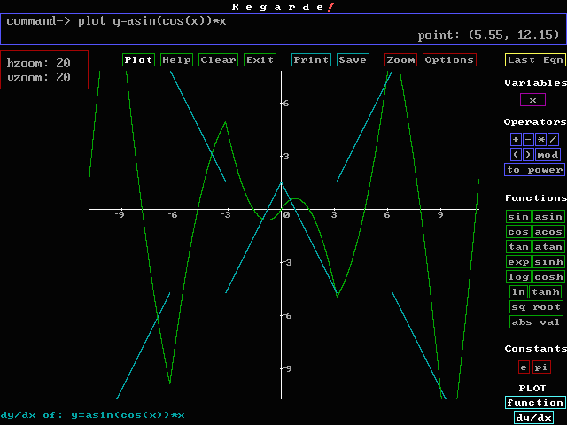
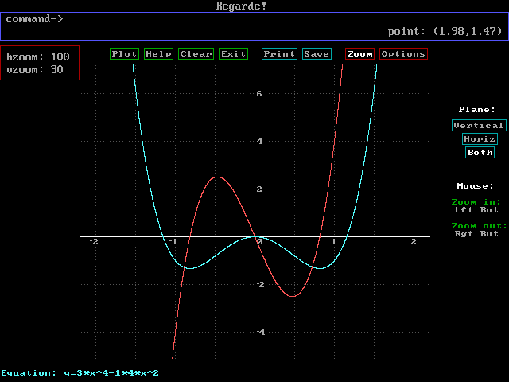
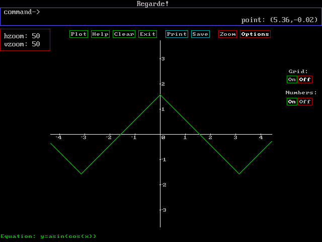
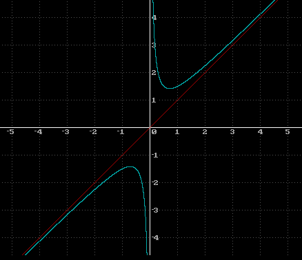
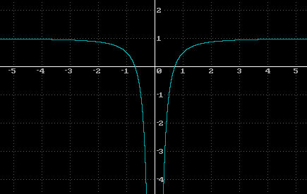
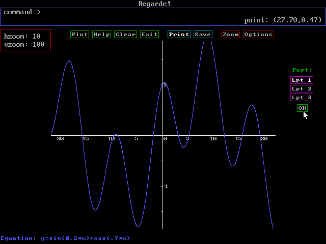
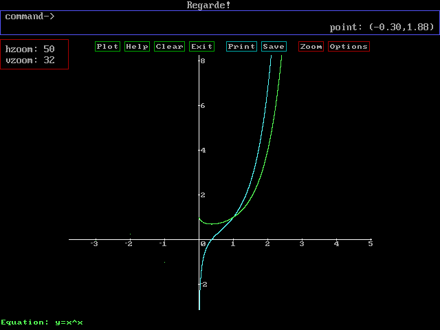

ScreenShots
ScreenShots
Below, we have the graph of the sin-1( cos(x) )*x and its
derivative.
Notice that the derivative is discontinuous due to cusps in the function.
Also, on the right hand side of the screen shot, you can see the plot sidebar.
|  |
This is a quartic and its derivative. The horizontal zoom is greater than the vertical
zoom.
Therefore, the graph has been stretched horizontally. On the right, the zoom control
butons
are visible.
|  |
This is sin-1(cosx). On the right you can see the axis configuration menu.
|  |
Here is y = x + 1/(2x) and the next graph is its derivative.
|  |
|  |
Below is y = sin(0.2x) + cos(0.7x). On the right is the printing sub menu.
|  |
This is x to the power of x and its derivative. Notice that the negative integer
points are defined.
|  |